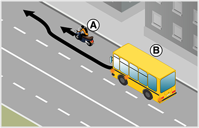
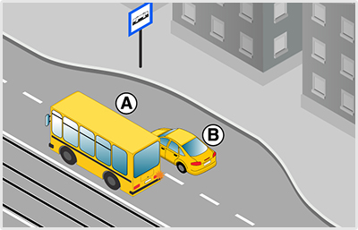
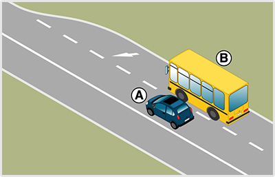
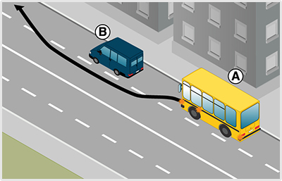
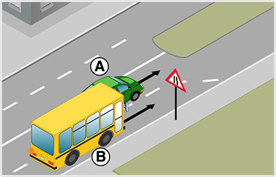
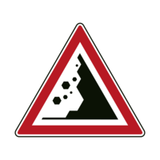
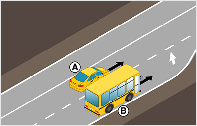
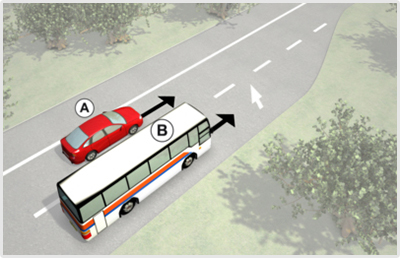
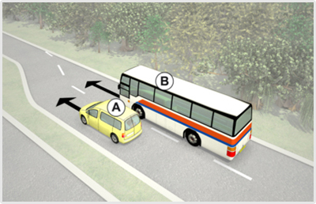

- 431. Köteles-e a ’B’ jelű autóbusz vezetője a motorkerékpáros előzése közben irányjelzőjét használni? #703787
- Igen, mert az előzés közben irányváltoztatás is történik.
- Nem, mert forgalmi sávon belül történik az előzés.

- 432. Ön az ’A’ jelű autóbuszt vezeti. A jobb oldali forgalmi sávba kíván áthajtani. Eközben... #703847
- köteles elsőbbséget adni a ’B’ jelű személygépkocsi részére.
- elsőbbsége van a ’B’ jelű személygépkocsival szemben.
- bizton számíthat arra, hogy a ’B’ jelű személygépkocsi az átsorolását lassítással segíteni fogja.
- 433. Az ’A’ jelű autóbusz vezetője a képen látható helyen változtathat-e forgalmi sávot? #703848
- Igen, de csak akkor, ha elsőbbséget adott a ’B’ jelű személygépkocsi részére.
- Igen, és elsőbbsége van a ’B’ jelű személygépkocsival szemben.
- Nem, autóbusz-megállónál soha nem szabad forgalmi sávot váltani.

- 434. Ön a ’B’ jelű autóbusszal a képen látható helyhez közeledik. Mikor közlekedik szabályosan? #703909
- Ha balra működtetett irányjelzőt használ, majd miután elsőbbséget adott az ’A’ jelű személygépkocsi részére áthajt a bal oldali forgalmi sávra.
- Mivel az Ön által igénybe vett forgalmi sáv megszűnik, ezért intenzíven gyorsít és megpróbál az érkező ’A’ jelű személygépkocsi elé behajtani.
- Számíthat arra, hogy a megszűnő sávja miatt Önt az ’A’ jelű személygépkocsi udvariasan maga elé engedi.
- 435. Ön a ’B’ jelű autóbuszt vezeti. Köteles-e az ábrán látható helyzetben irányjelzőt használni és a forgalmi sávot elhagyni? #703910
- Igen, mivel az útburkolati jel kötelezi Önt a forgalmi sáv elhagyására, amit csak irányváltoztatással tud végrehajtani.
- Igen, a forgalmi sávot el kell hagynia, de irányjelzőt nem kell használni, hiszen egyértelmű, hogy ebben a forgalmi sávban nem lehet tovább közlekedni.
- Nem kell irányjelzőt használni, hiszen az útburkolati jelek (nyilak) mutatják a sávelhagyás kötelező irányát.

- 436. Hogyan köteles az ábrán látható ’A’ jelű autóbusz vezetője az irányjelzőt használni? #704021
- Az előzés megkezdésekor balra, majd a visszatérés előtt jobbra jelezve.
- Csak az előzés megkezdésekor balra jelzéssel. A visszatérést már nem kell jeleznie.
- Mivel az úton nem érkezik más, ezért itt nem kell irányjelzőt használni.

- 437. A képen látható helyen melyik jármű haladhat tovább elsőként? #704030
- Az ’A’ jelű személygépkocsi.
- A ’B’ jelű autóbusz.
- Kölcsönös megegyezés alapján haladhatnak tovább.
- 438. Ön a ’B’ jelű autóbuszt vezeti. A képen látható helyen... #704031
- elsőbbséget kell adnia az ’A’ jelű személygépkocsi részére.
- számíthat arra, hogy az ’A’ jelű személygépkocsi maga elé engedi.
- meg kell egyezniük a továbbhaladási sorrendben.
- 439. A képen látható helyen melyik járműnek kell az irányjelzőjét használnia? #704032
- A ’B’ jelű autóbusznak, és balra kell jeleznie.
- A ’B’ jelű autóbusznak, és jobbra kell jeleznie.
- Az ’A’ jelű személygépkocsinak, és jobbra kell jeleznie.

- 440. Ön egy olyan úton halad, ahol ezt a közúti jelzést látja. Mikor jár el szabályosan? #704163
- Ha az út vonalvezetését követve nem használja az irányjelzőjét.
- Ha először jobbra, majd a kanyar közepétől balra ad irányjelzést.
- Ha csak jobbra működteti az irányjelzőjét, és a kanyarok után kikapcsolja azt.

- 441. Az ábrázolt jelzőtábla után ki kell kerülnie az úttestre került kődarabokat. Szükséges-e eközben az irányjelzőjét használni? #704178
- Csak akkor, ha a kikerülés irányváltoztatással is jár.
- Csak akkor, ha más is érkezik az úton.
- Ez vészhelyzetnek minősül, és ilyen esetben nem szükséges használni az irányjelzőt.

- 442. Az útkereszteződésben a belső forgalmi sávban közlekedik, amely felett ezt a közúti jelzést látja. Köteles-e irányjelzővel a tervezett balra kanyarodását jelezni? #704263
- Igen.
- Nem.
- Csak akkor, ha szemből más jármű érkezik.

- 443. Ön az ezzel a jelzőtáblával jelölt útkereszteződéshez érkezik. Az alábbiak közül melyik esetben számít Ön irányváltoztatónak? #704264
- Ha egyenesen továbbhaladva letér az út vonalvezetéséről.
- Ha balra kanyarodva követi az út vonalvezetését.
- 444. Megtévesztőnek minősül-e a balra történő irányjelzés, ha Ön ennél a közúti jelzőtáblánál haladva a balra kanyarodó főútvonal vonalvezetését követi? #704265
- Nem.
- Igen.

- 445. Köteles-e irányjelzőt használni, miközben ezen az útburkolati jelen egyenesen áthajt? #704307
- Nem.
- Igen, mert az útburkolati jel széle terelővonalnak minősül.
- 446. Az alábbiakban felsorolt esetek közül kinek köteles Ön elsőbbséget adni, ha egy egyenrangú útkereszteződéshez érve járművével balra kanyarodik? #704339
- A szemből érkező, egyenesen továbbhaladó jármű részére.
- A balról érkező, egyenesen továbbhaladó jármű részére.
- Senkinek sem.
- 447. Útburkolati jelek hiányában hová kell a járművel besorolni kétirányú úton, ha az útkereszteződésben balra kíván bekanyarodni? #714858
- Az úttest képzeletbeli felezővonala mellé.
- Mindig az úttest bal szélére.
- Ilyen esetben mindig az úttest jobb szélére.
- 448. Útburkolati jelek hiányában hová kell a járművel besorolni, ha osztott pályás úton balra kíván bekanyarodni? #714859
- Az úttest bal szélére.
- A felezővonal mellé.
- Az úttest közepére.
- 449. Közúti jelzés hiányában az alábbiak közül hogyan kell a járművel másik útra bekanyarodni? #714861
- Jobbra kis ívben, balra nagy ívben.
- Jobbra nagy ívben, balra kis ívben.
- Jobbra és balra is kis ívben.
- 450. A járművel történő bekanyarodás előtt szabad-e eltérni az általános besorolási szabályoktól? #714862
- Igen, ha a jármű méretei vagy egyéb ok miatt ez indokolt.
- Nem, a besorolás szabályait minden körülmények között be kell tartani.
- 451. Amennyiben a jármű méreteiből adódóan a bekanyarodás előtti besorolási szabályokat nem lehet betartani, akkor is ügyelni kell arra, hogy bekanyarodáskor a többi jármű forgalmát... #714863
- ne veszélyeztesse.
- ne akadályozza.
- ne zavarja.
- 452. Az alábbiak közül mely jármű részére kell elsőbbséget adni jobbra bekanyarodó járművel? #714864
- A kerékpársávon érkező részére.
- Az úttesten szemből érkező jármű részére.
- A jobbról érkező jármű részére.
- 453. Hogyan térhetnek el a nagyméretű járművek vezetői a besorolás általános szabályaitól? #714866
- Úgy, hogy közben a többi jármű forgalmát ne veszélyeztessék.
- Úgy, hogy közben a többi jármű forgalmát ne akadályozzák.
- Úgy, hogy közben a többi jármű forgalmát ne zavarják.
- 454. Használhat-e irányjelzőt abban az esetben, ha az útkereszteződésben a jobbra kanyarodó főútvonalon halad tovább? #715101
- Igen, de csak jobbra.
- Igen, de csak balra.
- Nem.
- 455. Az alábbiak közül mikor kell irányjelzőt használnia? #715393
- Amikor lehajt az útpadkára.
- Amikor behajt a körforgalomba.
- Amikor a kanyarodó főútvonalon követi a főútvonal vonalvezetését.

- 456. Ön a ’B’ jelű járművet vezeti. A képen látható helyen... #715420
- elsőbbséget kell adnia az ’A’ jelű jármű részére.
- elsőbbsége van az ’A’ jelű járművel szemben.
- meg kell egyezniük a továbbhaladási sorrendben.
- 457. Ön a ’B’ jelű járművet vezeti. Köteles-e irányjelzővel jelezni, ha átsorol a belső forgalmi sávba? #715421
- Igen, balra, mert forgalmi sávot fog változtatni.
- Igen, jobbra, mert forgalmi sávot fog változtatni.
- Nem, mert az érkező járművek úgyis látják, hogy a külső forgalmi sáv meg fog szűnni.
- 458. Lakott területen az úttest mellett futkározó gyerekeket lát. Adhat-e figyelmeztetésképpen hangjelzést? #715422
- Amennyiben úgy látja, hogy a gyerekek balesetveszélyesen a jármű elé léphetnek, akkor igen.
- Nem, mert kizárólag csak egy másik jármű vonatkozásában használhat hangjelzést.
- Nem, mert csak lakott területen kívül használhat hangjelzést.
- 459. Adható-e hangjelzés, ha lakott területen kívüli úton szemből érkező hajtott állatokkal találkozik? #715444
- Igen, de csak balesetveszély esetén.
- Csak akkor, ha az állatokat hajtó személyt nem látja.
- Igen, minden esetben.
- 460. Parkoló járművéből egy figyelmetlenül az úton átkelő gyalogost pillant meg. Használhat-e figyelmeztetésképpen hangjelzést? #715474
- Igen, ha ezzel egy esetleges balesetet előz meg.
- Nem, mert gyalogosok vonatkozásában nem használhat hangjelzést.
- 461. Lakott területen egy kerékpáros előzésébe kezd. Adhat-e hangjelzést előzési szándékának jelzésére? #715498
- Nem
- Igen
- Csak akkor, ha a hangjelzésével az előzés tényére szeretné figyelmeztetni.
- 462. Irányadóak-e a bekanyarodás szabályai az útkereszteződésen kívüli bekanyarodásra is? #721374
- Általában igen.
- Nem.
- 463. Az alábbiak közül hová kell a járművel besorolni, mielőtt bekanyarodik az útkereszteződésben? #721375
- Az útburkolati jelek által meghatározott forgalmi sávba.
- Bármely forgalmi sávba.
- A legbiztonságosabbnak ítélt forgalmi sávba.
- 464. Útburkolati jelek hiányában hová kell a járművel besorolni, ha az egyirányú forgalmú útról balra szeretne bekanyarodni? #721376
- Az úttest bal szélére.
- Az úttest jobb szélére.
- Az úttest közepére.
- 465. Útburkolati jelek hiányában hová kell a járművel besorolni, ha villamospályával ellátott úttestről szeretne bekanyarodni? #721378
- Ha a besorolás a villamos forgalmát zavarná, akkor a villamos elhaladásához szükséges területet szabadon kell hagyni.
- Mindig a villamosvágányra.
- Mindig a villamosvágány mellé.
- 466. Elsőbbséget kell-e adni a balra bekanyarodó járművel a szemből érkező, jobbra bekanyarodó jármű részére? #721379
- Ha a közúti jelzésekből más nem következik, akkor igen.
- Nem.
- 467. Elsőbbséget kell-e adni a balra bekanyarodó járművel a szemből érkező és egyenesen továbbhaladó jármű részére? #721380
- Ha a közúti jelzésekből más nem következik, akkor igen.
- Nem.
- 468. Balra történő bekanyarodás előtt meg kell-e győződni arról, hogy a bekanyarodni szándékozó jármű előzését balról más jármű nem kezdte-e meg? #721382
- Igen, olyan úton, amely nem alkalmas párhuzamos közlekedésre.
- Igen, mindenhol.
- Nem.
- 469. Balra történő bekanyarodás előtt meg kell-e győződni arról, hogy a bekanyarodni szándékozó jármű kikerülését balról más jármű nem kezdte-e meg? #721383
- Igen, olyan úton, amely nem alkalmas párhuzamos közlekedésre.
- Igen, mindenhol.
- Nem.
- 470. Kell-e elsőbbséget adni annak a gyalogosnak, aki annak az útnak az úttestjén halad át, amelyre a jármű bekanyarodik? #721386
- Igen.
- Nem.
- 471. Kell-e irányító személyt alkalmazni, amikor a jármű méreteiből adódóan eltér a besorolási és bekanyarodási szabályoktól? #721389
- Szükség esetén igen.
- Soha.
- Igen, mindig.
- 472. Hogyan kell a járművel másik útra bekanyarodni az alábbiak közül? #721390
- Úgy, hogy a jármű a bekanyarodás után a menetirány szerinti jobb oldalon maradjon.
- A bekanyarodás után a menetirány szerinti bal oldalra is szabad érkezni.
- Úgy, hogy a továbbhaladás gyorsasága biztosított legyen.
- 473. A képen látható helyen melyik jármű haladhat tovább elsőként? #721573
- Az ’A’ jelű jármű.
- A ’B’ jelű jármű.
- Kölcsönös megegyezés alapján haladhatnak tovább.
- 474. Az úttesten nem láthatóak útburkolati jelek. Egy kerékpárost csak úgy tud megelőzni, hogy pár centiméterre áthajt a menetirány szerinti bal oldalra. A manőver kapcsán szükséges-e az irányjelzőt használnia? #721577
- Igen, mert a képzeletbeli felezővonal átlépése is irányváltoztatás.
- Nem, mert csak felfestett felezővonal esetén kell irányjelzőt használnia.
- Nem, mert a kerékpárosok előzésekor nem szükséges irányjelzőt használni.
- 475. A körforgalom külső sávjából az útburkolati jelek kivezetik a körforgalomból járművét. Köteles-e ebben az esetben irányjelzést adni? #721579
- Igen.
- Nem.
- Csak akkor, ha a körforgalom lakott területen kívül van.
- 476. A körforgalom belső sávjából az útburkolati jelek kivezetik a forgalmat a körforgalomból. Hogyan kell az irányjelzőjét használni? #721580
- Jobbra történő működtetéssel.
- Először jobbra, majd a kihajtás előtt balra működtetéssel.
- Abban az esetben, ha a forgalmi sávok kivezetik a forgalmat, nem kötelező irányjelzőt használnia.
- 477. Körforgalmú útra történő bekanyarodás előtt köteles-e irányjelzést adni? #721582
- Nem.
- Igen.
- Igen, de csak akkor, ha a körforgalom párhuzamos közlekedésre alkalmas.
- 478. Mikor mellőzhető az irányjelző használata a körforgalomból történő kihajtás közben? #721583
- Sosem mellőzhető, mindig szükséges.
- Csak akkor, ha a forgalmi sávok kivezetik a forgalmat a körforgalomból.
- Csak akkor, ha a körforgalomban fényjelző készülék irányítja a forgalmat.

- 479. A képen látható helyen melyik jármű haladhat tovább elsőként? #723012
- Az ’A’ jelű jármű.
- A ’B’ jelű jármű.
- Kölcsönös megegyezés alapján haladhatnak tovább.

- 480. A képen látható helyen melyik járműnek kell az irányjelzőjét használni? #723477
- A ’B’ jelű autóbusznak, és balra kell jeleznie.
- A ’B’ jelű autóbusznak, és jobbra kell jeleznie.
- Az ’A’ jelű személygépkocsinak, és jobbra kell jeleznie.

- 481. Ön a kormánykerékkel jelzett járművet vezeti. Melyik járműnek kell az ábrán látható helyen az irányjelzőjét használni? #723486
- Az Ön által vezetett járműnek kell balra irányjelzést adnia.
- Az Ön által vezetett járműnek kell jobbra irányjelzést adnia.
- Az ’A’ jelű személygépkocsinak kell jobbra irányjelzést adnia.

- 482. A képen látható helyen melyik járműnek kell az irányjelzőjét használni? #724066
- A ’B’ jelű autóbusznak, és balra kell jeleznie.
- A ’B’ jelű autóbusznak, és jobbra kell jeleznie.
- Az ’A’ jelű személygépkocsinak, és jobbra kell jeleznie.